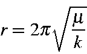
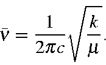

For a simple harmonic oscillator the period r is given by:

where k is the force constant. A molecule can absorb a photon that vibrates at the same frequency as one of its normal vibrational modes. That is, if a molecule, initially in its ground vibrational state, could be excited so that it vibrated at a given frequency, then that molecule could absorb a photon that vibrates at the same frequency. Although vibrational frequencies are usually expressed as kilohertz or megahertz, in chemistry vibrational frequencies are normally expressed in terms of the number of vibrations that would occur in the time that light travels one centimeter, i.e., n = 1/cr Using this equation for simple harmonic motion, the vibrational frequency can be written as:

In order for n to be in cm-1, c, the speed of light must be in cm.sec-1, k, the force constant in erg/cm2, and m the reduced mass in grams.
For a molecule, the force constants are obtained by diagonalization of the mass-weighted Hessian matrix. Most of the work in calculating vibrational frequencies is spent in constructing the Hessian.